Le Chacal (Miles Warren) (Terre-616)
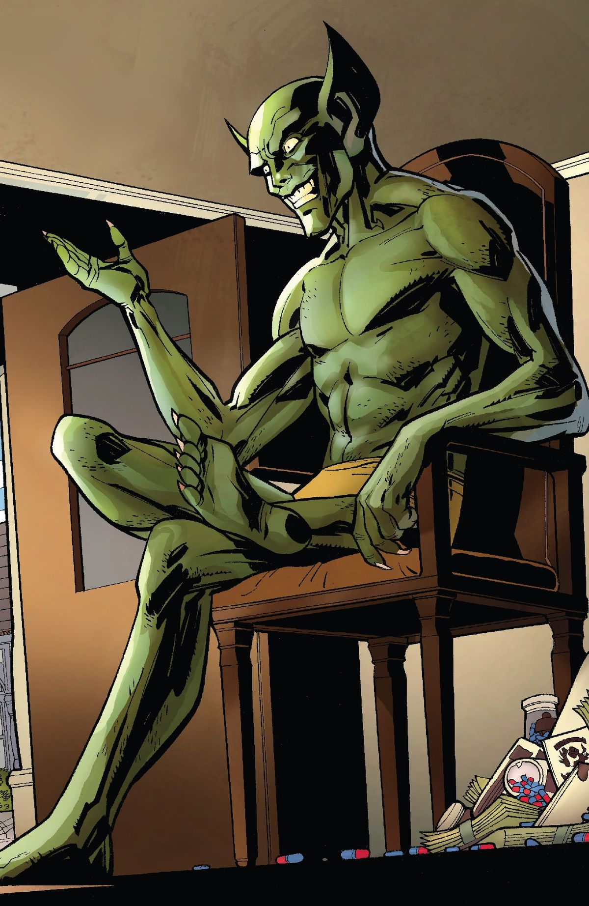
Origines :
Le professeur Miles Warren était un enseignant à l'Empire State University, où il enseignait la biochimie.
En secret, il étudia la génétique, supervisé par le Maître de l'Évolution, mais ce dernier l'abandonna quand il découvrit que son élève était mentalement instable et qu'il travaillait sur le clonage humain, après avoir créé un homme-chacal qui massacra sa propre famille.
Le Maître bannit Warren du Mont Wundagore, et ce dernier retrouva un mentor en la personne du Maelstrom, qui lui fournit du nouveau matériel.
De retour aux États-Unis, Warren devint professeur d'université et tomba amoureux d'une de ses étudiantes, Gwen Stacy, la petite-amie de Peter Parker.
La jeune femme fut tuée lors d'une chute provoquée par le Bouffon Vert.
Dès lors, Warren se focalisa sur des méthodes de clonage humain inspiré par le clonage animal de son collègue Anthony Serba.
Avec l'aide d'échantillons d'ADN récupérés en classe, Warren produisit des clones de Peter Parker et de Gwen Stacy, et découvrit ainsi l'identité secrète du héros en analysant ses cellules.
Son premier clone raté de Gwen Stacy s'appelait Abby-L.
Il accepta de ne pas la détruire si elle le laissait tranquille, et elle disparut rapidement de la circulation.
Un premier clone de Peter se révéla défectueux et montra rapidement des signes de dégénération.
Ce clone, surnommé Kaine, s'échappa.
Kaine affronta Spider-Man et ce dernier retrouva Warren dans son laboratoire, qui explosa, et ce dernier disparut.
Un jour, il tua son assistant, Anthony Serba, parce qu'il venait de découvrir ses expériences secrètes, Warren devint complètement fou et développa la personnalité du Chacal, en essayant de se convaincre que quelqu'un d'autre était l'assassin, tout en passant des mois à améliorer ses procédés de clonage et à développer son matériel.
Un jour, après un affrontement entre Spider-Man et un clone du Chacal ayant provoqué l'explosion du Shea Stadium, le Chacal sortit de l'ombre pour mettre en œuvre la suite de son plan : voler l'identité de Peter Parker.
Il créa un nouveau clone de Peter Parker, et ce dernier affronta le véritable Spider-Man.
Après avoir déterminé lequel des deux était le clone, le Chacal injecta une drogue à l'original pour simuler sa mort, ce qui mena le clone à jeter le corps dans une cheminée.
Le Chacal récupéra ensuite secrètement le corps de Spider-Man et laissa le cadavre d'un autre clone dans la cheminée pour créer encore plus de confusion.
Il effaça ensuite les souvenirs de Peter Parker et lui en implanta de nouveaux, ce qui l'amena à voyager sous le nom de Ben Reilly et de devenir plus tard le Scarlet-Spider.
Toutefois, à l'insu du Chacal, son équipement avait été saboté par son assistant Seward Trainer pour lui faire croire que le Spider-Clone était l'original et inversement.
Ben Reilly était donc le véritable clone, et Peter Parker était celui qui avait jeté le corps de son clone dans la cheminée.
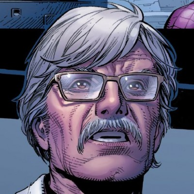
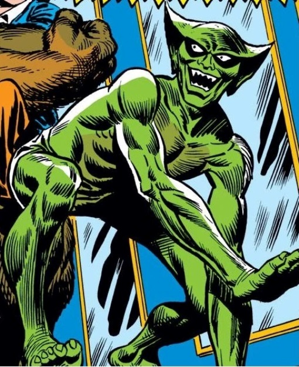

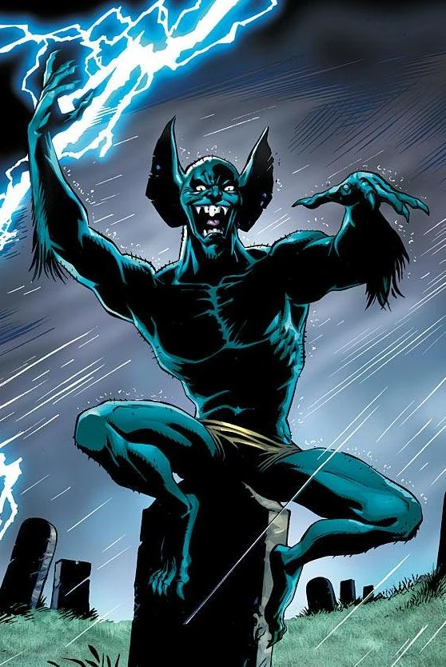
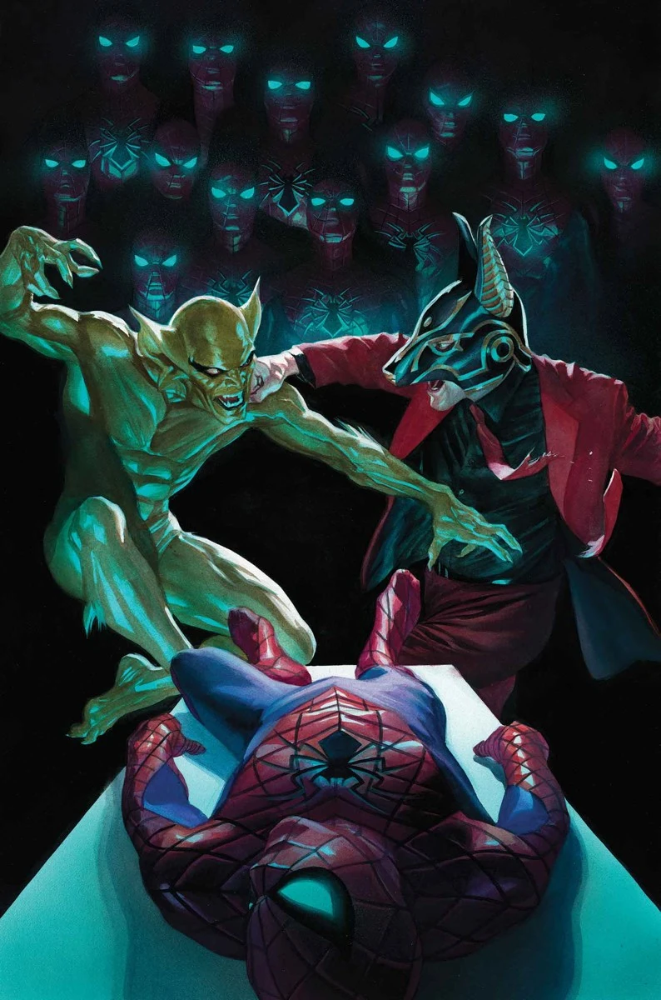
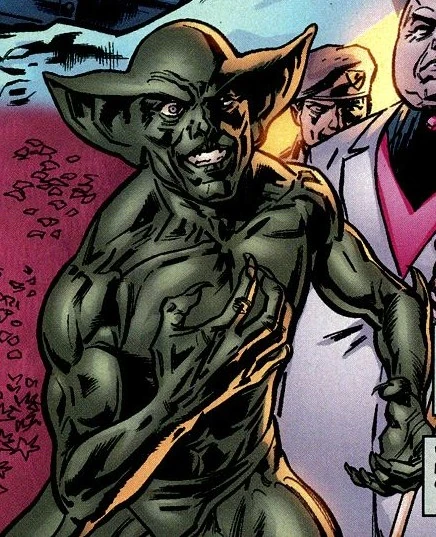
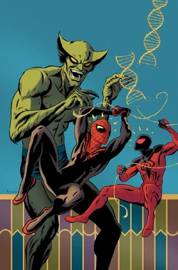
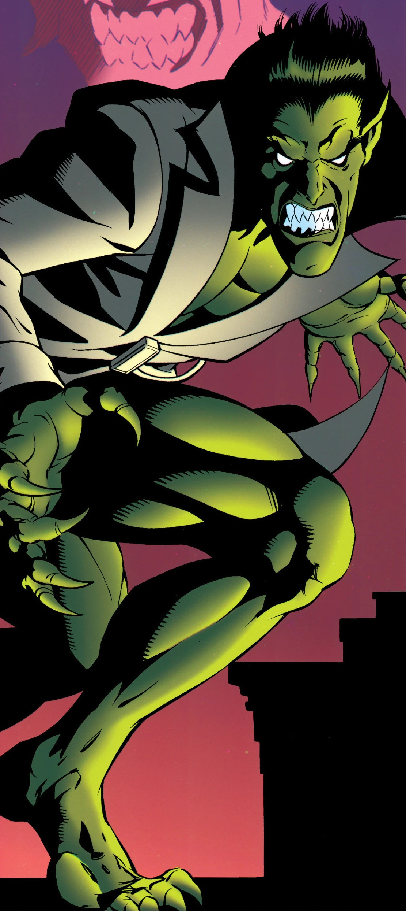
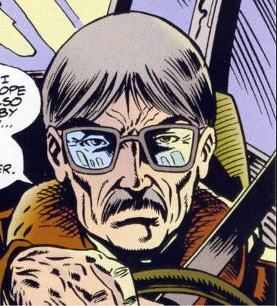
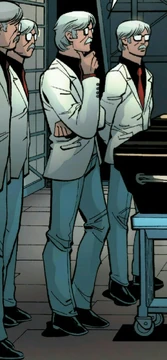
Capacités :
Au début de sa carrière, Miles Warren ne portait qu'un simple déguisement sans capacités particulières, avant d'améliorer génétiquement son propre corps, faisant muter ses ongles en griffes et ses dents en crocs.
En complément, Miles est un génie en génétique, en biochimie et un pionnier dans le clonage humain.
Grâce à ses mutations, il possède désormais une force surhumaine, ainsi qu'une agilité et une vitesse supérieures à la moyenne humaine.

Apparence :
Le Chacal possède une apparence très reconnaissable, mélange de savant fou et d'animal grotesque.
Il possède une combinaison intégrale verte moulante lui donnant une apparence de Chacal-humain, proche d'un gobelin.
Dans certaines versions, il porte également une fourrure ou un col hérissé autour du cou, ainsi que de longues griffes et des crocs très visibles.
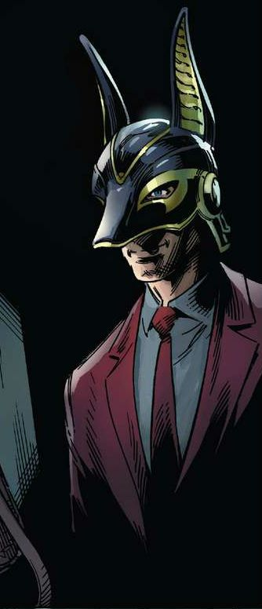
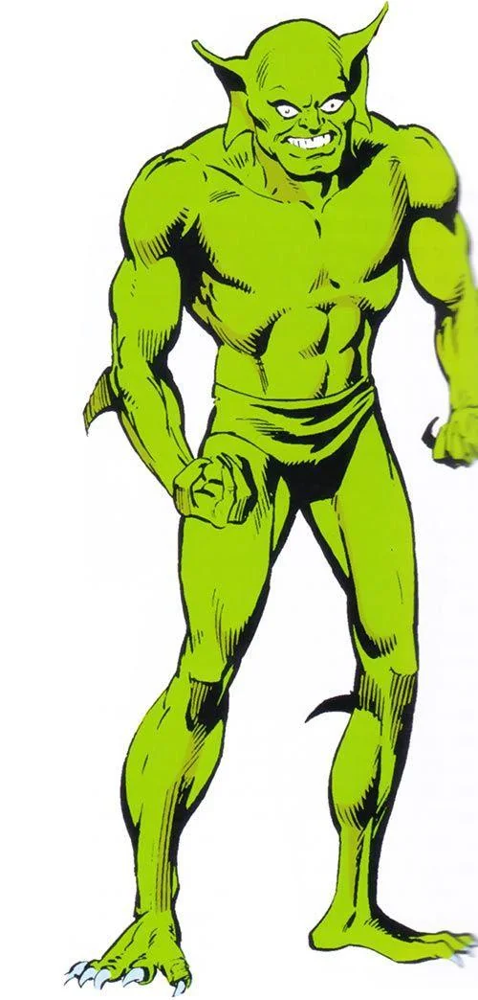
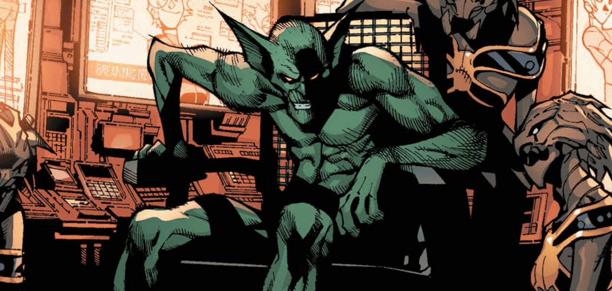